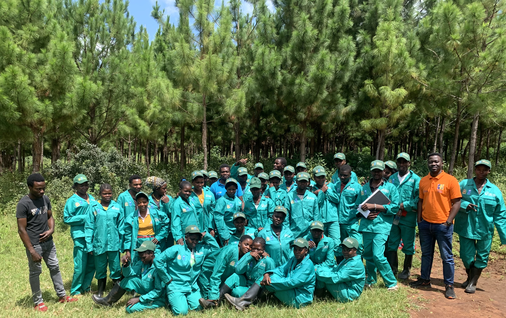
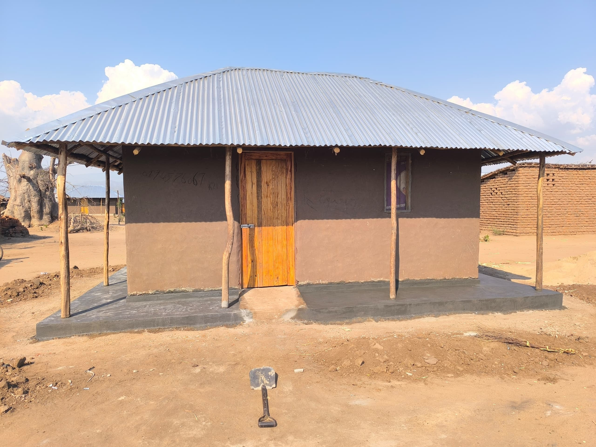

malawi green corps (MGC) project

A 3-Year UNDP-funded project, implemented by Catholic Relief Services (CRS).
The project aimed at rehabilitating 5,000 hectares of degraded land, including waste sites, by engaging 2,000 youths across 10 districts in Malawi.
As the MEAL Lead, I led all the monitoring, evaluation, accountability, and learning (MEAL) functions.
I Developed an interactive dashboard to provide real-time data on youth registration, restored hectarage, restoration activities (e.g., trees planted),
and feedback and complaints. I also led GIS-based mapping of restoration sites to visualise progress and support data driven planning.
Tools used: Ms Excel, Power Query, Google Earth, ArcGIS Pro, and SharePoint
Watch Video
management of acute malnutrition (MAM) response
Funded by the JBJ Foundation, and Implemented by Catholic Relief Services, this project aimed to address food insecurity and moderate acute malnutrition among children aged 5–24 months affected by Cyclone Freddy.
It involved the procurement and distribution of fortified Corn-Soy Blend (CSB++) to 53 health facilities across 3 districts in Malawi.
I led MEAL functions and developed a real-time dashboard to track child enrolment, CSB++ distribution, stock levels, and MUAC improvements,
serving both as a performance monitoring and commodity tracking tool.
Tools used: Ms Excel, Power Query, Power BI, and SharePoint
View Dashboard Snipppet
ER4 shelter and recovery project

An 18-month USAID-funded project implemented by Catholic Relief Services (CRS) to support post-disaster recovery
through the construction of transitional shelters in two districts of Malawi.
I led the preliminary MEAL functions and developed a real-time dashboard to track project participant enrolment,
construction site coordinates, shelter progress, and material distribution.
The system enhanced data-driven decision-making and timely reporting during implementation.
Tools used: Power BI, Google Earth, ArcGIS Pro
Watch Video